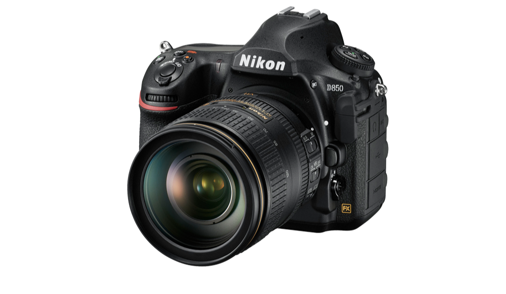
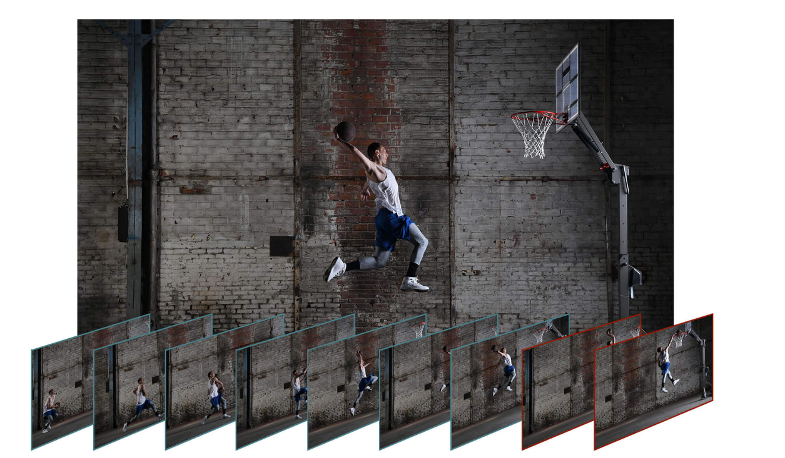
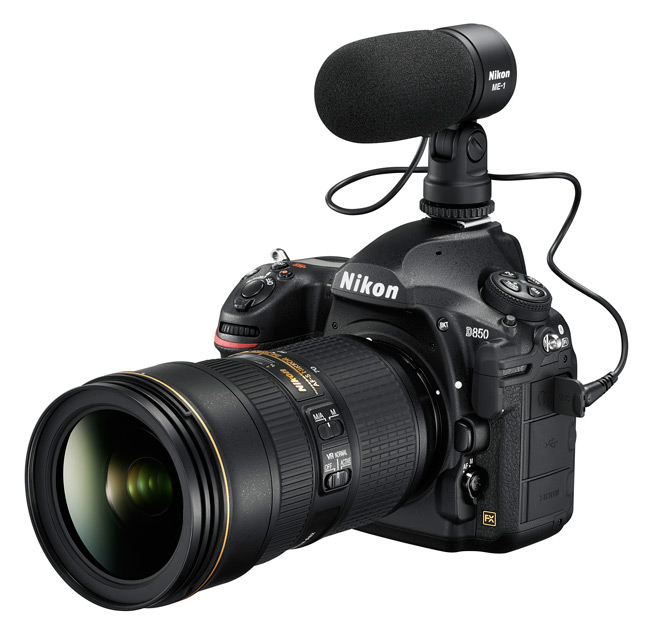
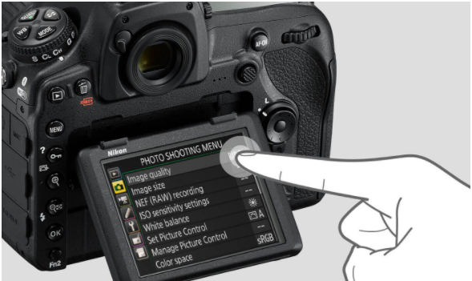
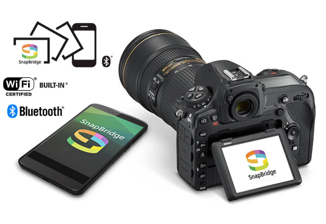
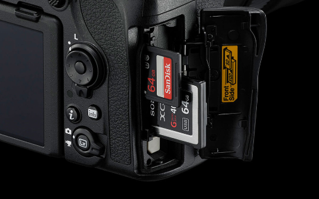
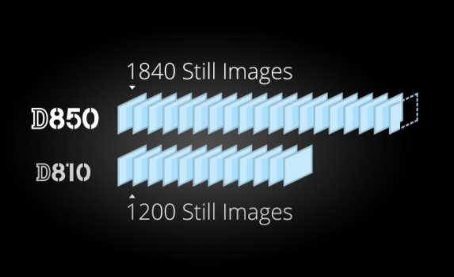

|  |
Maximum Resolution
Nikon has introduced a high resolution DSRLs, a camera allows the photographer to capture fast and process all the 45.7 data megapixeles with less sounds, a dynamic and extensive scope, texture detail, a high speed shoot and full-frame 4K UHD video recording. |
|---|---|
Precision optical viewfinder
With Nikon you see what the lens sees, more precise with any delay, excellent to capture the ideal photo in a speed race just in real time. |
 |
|  |
Versatile Sound Controls
The audio level rise unexpectedly, Nikon D850 reduces automatically the sound through the microphone sentivity and prevent the distortion that allows recording with clear sound. |
Touch Monitor
Touch Shutter control and navigate menus, playback and makes it easy to get the shot from high or low angles. Zoom in during live View shooting and use the new PinPoint AF to put focus right where you want it. |
 |
|  |
Built-in Wireless Connectivity
Wireless remote controllers bring a new array of options to your
photography. Using Nikon's SnapBridge app you will be able to transfer images to a compatible smartphone or table instantly. Transfer imaes and movie files to a PC or FTP server via wired LAN/wireless LAN Using optional WT-7 Wireless Transmiter. |
XQD Storage
Reliable storage media is crucial to all creative work. The Nikon 64GB XQD is optional to use and allows the optimum handling of D850's incredible high resolution files and shooting speed. The memory can be used for back up or extra storage space. |
 |
|  |
Long battery life
Maximum Number of pictures that can be shot per single battery charge. |